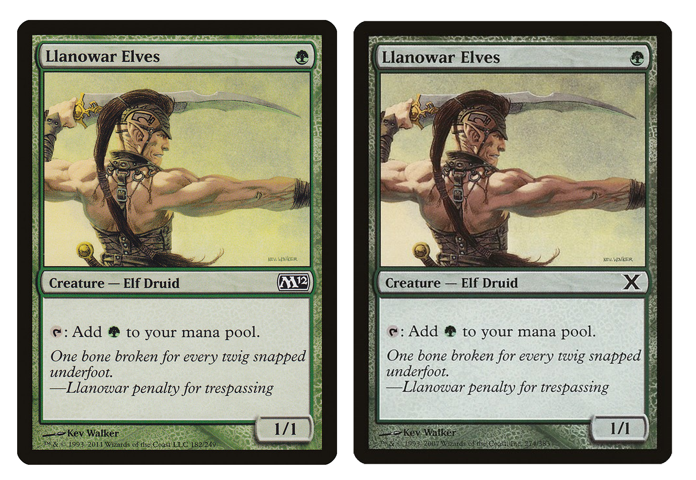

I recently started looking through my Magic the Gathering cards again while I was unpacking some boxes and realized just how many I had accumulated over my past 8 years of playing. I thought it would be cool to have some way of sorting it all, and after some research, I did find quite a few impressive options! A couple that stood out included:
All of these were great for some reason or another with some of their main characteristics being speed, capacity, ability to sort foils, etc. However, none of them had one of the main features I would have wanted in a card sorting machine for myself. All of these machines are limited by the fact that they cannot sort on an individual card level. What I mean by this is that they can only sort cards into a preset number of bins which would not allow for things like sorting a stack by value and sorting a stack alphabetically.
Of course, you can get rough estimates of these by sorting into bins of say $0.00-$0.99, $1.00-$3.00, etc. but I thought it would be interesting to try and make a machine that would be able to do the true type of sortring I'm talking about.
Researching into some of the mechanics behind this, I understand its a difficult task (the actual sorting will require some pretty smart variation of a pancake sort) but I'd like to start simple by starting on the scanner component itself.
Detecting a Magic Card
The first step in building such a sorting machine would be a scanner which could detect a magic card and then extract enough information from it to query for the remaining details. I decided to try my hand at using OpenCV through CV2, a computer vision library in Python.
To find the card from an image, we use the Canny Edge Detection algorithm to determine where the borders are. This consists of applying a Gaussian blur to filter the image, setting thresholds for the intensity of the image to cut out any noise, dilating the image (which grows the size of the white regions), and then finding the points and edges which make up the contours in the filtered image. To do this in Python looks something like:
import cv2
import numpy as np
camera = cv2.VideoCapture(0)
def getContours(image, imageContour):
contours, hierarchy = cv2.findContours(image, cv2.RETR_EXTERNAL, cv2.CHAIN_APPROX_NONE)
cv2.drawContours(imageContour, contours, -1, (255, 0, 255), 7)
points = []
for contour in contours:
perimeter = cv2.arcLength(contour, True)
approximation = cv2.approxPolyDP(contour, 0.02 * perimeter, True)
# Flatten array and get points
flattenedApprox = approximatthreshold1ion.ravel()
for i in range(int(len(flattenedApprox) / 2)):
x = flattenedApprox[2*i]
y = flattenedApprox[2*i+1]
points.append([x, y])
return points
while(True):
success, frame = camera.read()
baseFrame = frame.copy()
frameContour = frame.copy()
frameBlur = cv2.GaussianBlur(frame, (7, 7), 10)
frameGray = cv2.cvtColor(frameBlur, cv2.COLOR_BGR2GRAY)
# Canny edge detector
threshold1 = 0, threshold2 = 70
frameCanny = cv2.Canny(frameGray, threshold1, threshold2)
kernel = np.ones((5,5))
frameDilation = cv2.dilate(frameCanny, kernel, iterations=1)
points = getContours(frameDilation, frameContour)
cv2.imshow('frame', frameContour)
if cv2.waitKey(1) & 0xFF == ord('q'):
break
camera.release()
cv2.destroyAllWindows()
import numpy as np
camera = cv2.VideoCapture(0)
def getContours(image, imageContour):
contours, hierarchy = cv2.findContours(image, cv2.RETR_EXTERNAL, cv2.CHAIN_APPROX_NONE)
cv2.drawContours(imageContour, contours, -1, (255, 0, 255), 7)
points = []
for contour in contours:
perimeter = cv2.arcLength(contour, True)
approximation = cv2.approxPolyDP(contour, 0.02 * perimeter, True)
# Flatten array and get points
flattenedApprox = approximatthreshold1ion.ravel()
for i in range(int(len(flattenedApprox) / 2)):
x = flattenedApprox[2*i]
y = flattenedApprox[2*i+1]
points.append([x, y])
return points
while(True):
success, frame = camera.read()
baseFrame = frame.copy()
frameContour = frame.copy()
frameBlur = cv2.GaussianBlur(frame, (7, 7), 10)
frameGray = cv2.cvtColor(frameBlur, cv2.COLOR_BGR2GRAY)
# Canny edge detector
threshold1 = 0, threshold2 = 70
frameCanny = cv2.Canny(frameGray, threshold1, threshold2)
kernel = np.ones((5,5))
frameDilation = cv2.dilate(frameCanny, kernel, iterations=1)
points = getContours(frameDilation, frameContour)
cv2.imshow('frame', frameContour)
if cv2.waitKey(1) & 0xFF == ord('q'):
break
camera.release()
cv2.destroyAllWindows()
This code will continuously read the camera input, blur the image, dilate it, detect the edges, and display them back. It also returns some additional information such as the specific points and perimeter that make up the countour which will be useful for determining the correct contour if there are multiple found in the image and then straightening the detected card outline so that we can better scan it for information.
By adding one more relatively simple function, we can intake these points from the contour, check that it must be the card (if it has 4 points), and then transform the image to center and straighten the card for easier analysis.
def straightenImage(imageContour, points):
width, height = 336, 468
if len(points) != 4:
return imageContour
pointsFrom = np.float32(points)
if np.linalg.norm(np.array(points[0]) - np.array(points[1])) < 300:
pointsTo = np.float32([[width,0], [0,0], [0,height], [width,height]])
else:
pointsTo = np.float32([[0,0], [0,height], [width,height], [width,0]])
matrix = cv2.getPerspectiveTransform(pointsFrom, pointsTo)
return cv2.warpPerspective(imageContour, matrix, (width, height))
width, height = 336, 468
if len(points) != 4:
return imageContour
pointsFrom = np.float32(points)
if np.linalg.norm(np.array(points[0]) - np.array(points[1])) < 300:
pointsTo = np.float32([[width,0], [0,0], [0,height], [width,height]])
else:
pointsTo = np.float32([[0,0], [0,height], [width,height], [width,0]])
matrix = cv2.getPerspectiveTransform(pointsFrom, pointsTo)
return cv2.warpPerspective(imageContour, matrix, (width, height))
At this point, running our code gives the following:

Detecting and centering various magic cards with Canny edge detection
Identifying a Magic Card
Now that we can align the card, there are a number of ways we can attempt to identify which card it actually is. The top few options in increasing difficulty of implementation are:
- Image comparison against a database of cards
- Optical Character Recognition (OCR)
- Machine Learning
For the sake of moving quickly to make a prototype, I went with the first option.
In order to compare two images, there are also a few different approaches. The naive approach might be to use the Mean Squared Error (MSE), which can vary between 0 and infinity based on the difference between our detected image and a saved copy of potential card from a database. Instead, I settled on using the Structural Similarity Index Measure (SSIM) which is more meant for image comparison than MSE and only varies between -1 and 1 (with 1 meaning perfect similarity between the images).
Scanning all the cards we want to check against and taking the highest SSIM values, we get a ranked list of estimates for which card we are detecting.

Displaying the highest SSIM value card name after comparing our aligned image against a local database
There are a few issues with the approach. The first is that there are around 50,000+ unique magic cards, which would make this procedure incredibly slow. Additionally, there are a number of cards which, although they look similar, can have very different prices and information. SSIM would have a hard time distinguishing between very similar images and may not be reliable in these sort of situations. Take for example, these two:

Reprints of the card Llanowar Elves which are from different sets
Although what we have works for now, this identification step would be much more reliable and efficient if swapped out with either OCR or machine learning in the future. In that case that we use machine learning, it might be smart to have separate neural networks for identifying the set symbol in the center right of the card and then using that to narrow down the possibilites to only a few hundred cards for a smaller neural net to distinguish between.
Sorting a Magic Card
Most of this first article was meant as an initial attempt at building just the magic card scanner itself. Since I may be working with a friend on the physical device sometime in the near future, I'll just give my initial thoughts on how we might attempt this and then include those details in a follow-up article.
As for the sorting method, I envisioned needing something along the lines of a modified pancake sort to include multiple stacks and perhaps some pre-scanning of the cards to be sorted in order to optimize the number of steps this would take. This might be difficult however, since finding the optimal steps for a pancake sort is currently an ongoing area of research. In particular, it would be some variation of a burnt pancake sort, which adds the constraint of 'different sides' to the pancakes (which is important if we want all of the cards to be facing upwards).
If this proves to be too difficult to implement, we may go the route of sorting cards into bins, feeding them back into the machine, and then resorting to perform a sort of merge sort.
To determine the actual values of cards we want to sort based on, we can query the Scryfall API for any card information we want. For example, if we detect a card to match Rancor with high probability, we can query by card name to get the most up-to-date pricing, versions, mana cost, card type, etc.

Querying Scryfall by card name and displaying basic card details
Next steps for this project are to improve the identification step and start work on the physical sorting aspect. Look forward to new articles on this throughout the new year as I add to it and refine the idea!
Happy Holidays!
Resources
- Comparison of Existing Machines (video by Jack Baumgartel who is doing a custom sorting machine as well)
- Detection and Identification Example
- Scryfall API
- Code Repository for MTG CV
- Article on Sorting Burnt Pancake